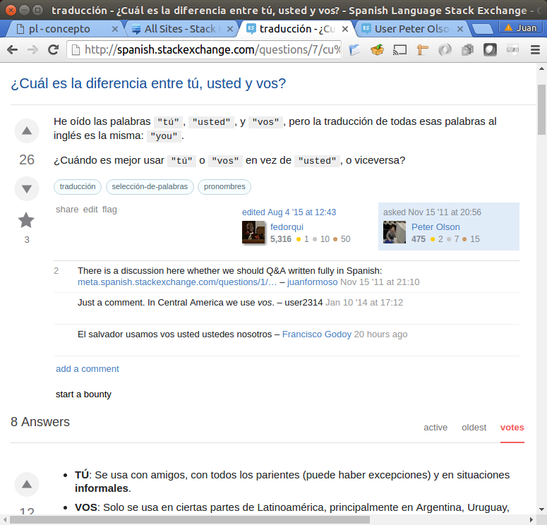
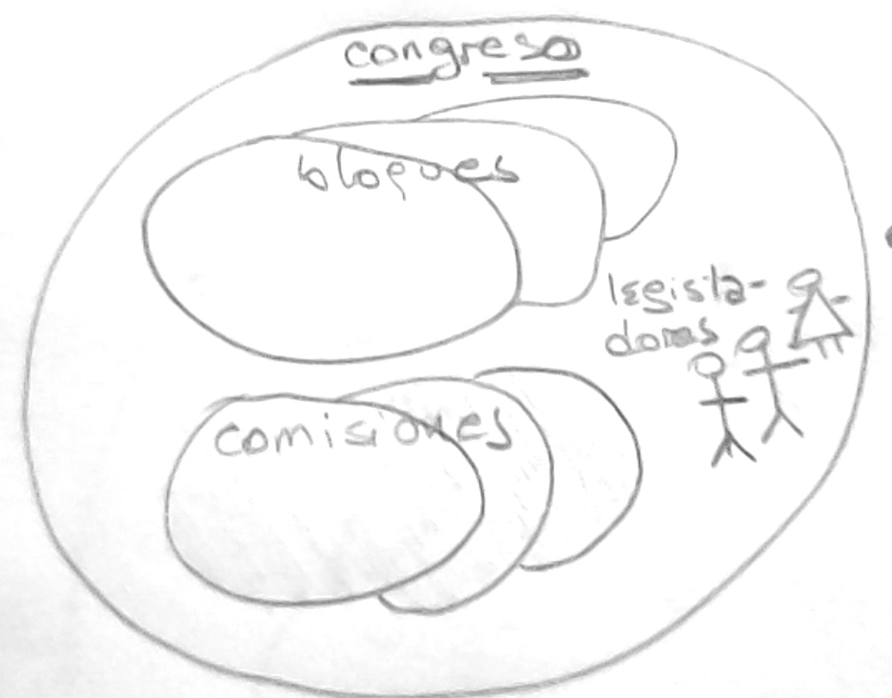
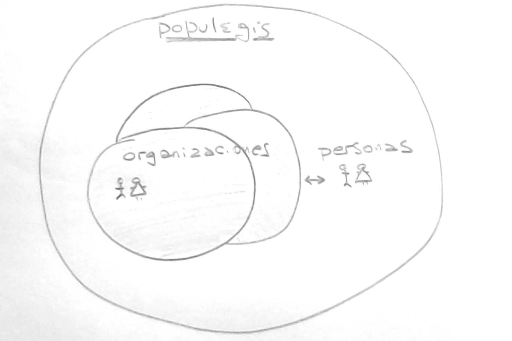

Una vez finalizadas las elecciones, el contacto entre los legisladores y los votantes a quienes representan se corta.
Hay una pérdida de interés mutuo de ambos lados, cuyos efectos son negativos por que los legisladores pierden contacto con la Sociedad que a su vez no participa en la actividad política del País hasta las próximas elecciones.
Este proyecto apunta a crear un canal de comunicación bidirecional entre la Sociedad y la Legislatura.
Es una mujer que tenía su casa hipotecada en dólares cuando la crisis del 2001 y se dió cuenta de que la iba a perder ante la imposibilidad de pagar la refinanciación que establecía un proyecto de ley que se estaba tramitando en el Congreso.
Aunó voluntades y estableció conexiones hasta que consiguieron mostrarle al legislador que impulsaba esa ley cuál iba a ser el resultado.
Logró que la ley se corrigiera y salvó su casa y la de varios otros que estaban en la misma situación.
Esto fué posible gracias a una circunstancia particular. El factor principal de éxito fué la inteligencia y el compromiso de Griselda, que pudo aplicar gracias a que ella había trabajado en la Legislatura de su provincia y eso la habilitó para entender el funcionamiento de la Legislatura Nacional; conocía los pasos y sabía cómo moverse.
Es válido suponer que hubo muchos otros casos de leyes que afectaron terriblemente a gente que no tuvo, como Griselda, la posibilidad de influír en su diseño. Leyes pensadas para beneficiar a la Sociedad cuyos efecto termina siendo perjudicial.
Este proyecto apunta a allanar el camino a los que, desde el llano, quieren opinar sobre el desarrollo de las leyes que los van a afectar, sin necesidad del esfuerzo y los conocimientos previos de Griselda.
Se trata de crear un ámbito donde los particulares pueden interactuar vía Internet entre sí y también con los legisladores y funcionarios, para acercarles información que les sirva para obtener resultados mejores.
No significa que los legisladores deleguen su responsabilidad, transmitiendo a la gente el voto de las leyes. Significa que los particulares que tengan conocimientos relevantes para cada caso particular puedan aportarlos públicamente de una manera conveniente. Busca crear un ambiente de detate informado con la participación de particulares, ONGs y otras personas jurídicas, y los propios legisladores y funcionarios del Gobierno. Incluye a los periodistas como amplificadores de lo que se diga, para que esa información llegue a las personas que si bien están interesadas, no participan activamente.
El foco está en la discusión pública de los proyectos de ley en trámite, con especial énfasis en la participación de expertos que sean respetados en la materia que se trate, idealmente a través de ONGs u otras instituciones.
En principio puede participar cualquiera, sea organización o particular. Se requiere que todos interactúen usando una identidad real, verificada por ejemplo por medio del CUIL o CUIT.
Si bien cualquiera puede participar, es obligatorio estar identificado y deseable declarar cualquier afiliación.
Cuando entra un proyecto de ley a Mesa de Entradas de alguna de las cámaras, se abre la discusión sobre ese proyecto.
Idealmente, uno o más participantes publican una "bajada" del proyecto, es decir, la traducen de lenguaje legal a castellano.
La discusión tendrá "tags" (etiquetas) indicando cuáles son los temas relacionados, como por ejemplo "seguridad", "impuestos", "tercera edad", cualquiera de los nombres de las comisiones del Congreso.
Los participantes están suscriptos a los temas que les interesan y, cuando se registra un nuevo proyecto, reciben una notificación (por ejemplo por email) invitándolos a participar en la discusión.
Cuando se abren foros públicos se plantea la inquietud válida sobre la participación de personas cuyas intervenciones aportan volúmen pero no valor, o las que hacen ruido (trolls) para obstruír.
La metodología de Stack Exchange, una constelación de sitios web de discusión de temas variados, es una faceta para la resolución del problema.
El contenido de los sitios de Stack Exchange es totalmente creado por los usuarios, y sin embargo no tiene problemas.
Eso se logra con una interfase de usuario muy bien diseñada y probada desde hace años.
En cada uno de los sitios, por ejemplo Spanish Language (consultas sobre nuestro idioma para extranjeros), se aceptan preguntas sobre ese tema en particular. Las que no están relacionadas se eliminan.
A su vez cada pregunta (un proyecto de ley en nuestro caso), tiene una estructura definida que consta de la pregunta en sí (con un título descriptivo), y a continuación las respuestas que haya.
Tanto la pregunta como sus respuestas pueden, a su vez, recibir comentarios.
Para demostrar, un ejemplo. El usuario Peter Olson (que está en Qingdao, China) pregunta "¿Cuál es la diferencia entre tú, usted y vos?" en el foro sobre "Spanish Language".

En la imagen se observa la pregunta. Al momento de capturar la pantalla tiene 26 votos positivos. Si la pregunta fuera improcedente o fuera de tema tendría votos negativos que la harían desaparecer.
Se ve que está relacionada con traducción, selección-de-palabras y pronombres. Estos son los "tags" (etiquetas) que informan los temas con los que la pregunta está relacionada.
A continuación aparecen dos usuarios, fedorqui y Peter Olson. El primero editó la pregunta para que quede expresada en castellano correcto pero sin cambiarle la intención. fedorqui puede hacer esto por que tiene 5316 puntos de reputación que ganó participando activamente durante dos años y medio. Peter Olson, que solo tiene 475 puntos, no puede emitir votos negativos. Se puede ver lo que hizo fedorqui picando donde dice "edited".
Debajo de los tags y los usuarios aparecen los comentarios a la pregunta. El primero tiene dos votos positivos.
Lo siguiente son las 8 respuestas que había en el momento de la captura, cada una con sus votos y sus comentarios.
Es relevante el hecho de que las respuestas se organizan según la cantidad de votos recibidos, es decir, las respuestas con menos votos van a parar al final y en general nadie las ve.
Los usuarios se esfuerzan para aumentar su reputación, y esa reputación aumentada las otorga poderes gradualmente a medida que muestran conpromiso. Ese es el mecanismo de auto-moderación de estos sitios de discusión más modernos. Es resultado es que en varios sitios técnicos que uso regularmente no he visto contenido molesto. Sí se ven respuestas equivocadas o irrelevantes que van siendo empujadas a la cola del pelotón.
La red se compone de organizaciones, por ejemplo ONGs como Cippec, Poder Ciudadano o Conciencia, y también de individuos.
Cualquiera puede opinar sobre un proyecto de ley, sea organización o particular.
En el caso de las organizaciones la opinión puede ser elaborada internamente como un borrador que solo puedan ver los miembros antes de ser publicada. En ese caso la opinión puede ser institucional.
Por diversas causas, por ejemplo ignorancia, disciplina partidaria, o eventualmente corrupción, un grupo cerrado de legisladores aprueba leyes a veces en contra de los intereses de las personas o distritos que representan.
Como se trata de una democracia representativa, una vez terminadas las elecciones los legisladores comienzan a operar autónomamente, mayormente desconectados de los que los votaron.
Pero un poco de control popular no les vendría mal a esos representantes.
Este proyecto es para establecer un canal de conexión permanentemente activo entre el pueblo y sus legisladores, aún fuera de los períodos de elecciones.
El método es la creación de una red similar a las redes sociales, una "red política", donde puedan participar gente y organizaciones opinando sobre el desarrollo de las leyes.
Como se explica más adelante, la influencia se produce por efecto de la transparencia, haciendo que los legisladores sean conscientes de que sus actos van a tener la repercusión que les corresponda.
Fuí fuertemente impactado por la historia de Griselda M., una señora de Corrientes que tenía un crédito hipotecario en la época de la gran devaluación y la refinanciación de deudas en dólares.
Un legislador bien intencionado estaba impulsando un proyecto de ley para refinanciar deudas en dólares incluída la de Griselda. Ella se dió cuenta de que, tal como estaba el proyecto de ley, ella y su familia iban a perder su casa.
Entonces formó una asociación con otros deudores similares a ella con el objetivo de contactar a los legisladores nacionales involucrados y tratar de influenciarlos.
Con mucho trabajo lograron su objetivo.
La barrera más difícil no fué los legisladores en sí, sino todo lo que tuvieron que hacer para poder llegar a ellos.
El caso de Griselda es especial por que como ella había trabajado en la Legislatura Provincial, a partir de esa experiencia pudo extrapolar la operatoria del Congreso Nacional, y entonces sabía lo que tenía que hacer y dónde (por ejemplo las comisiones y sus asesores). Pero ese no es el caso de la mayoría de la gente: no debería ser necesario tener conocimientos especiales para poder estar informado de la actividad legislativa.
Las cámaras tienen una organización donde los legisladores están agrupados en bloques.
Hay además las comisiones que además de legisladores incluyes expertos en el tema de cada comisión.

Cuando se inicia un proyecto, dentro del Congreso, pasa por las comisiones que le corresponda según el tema relacionado, antes de ser tratado (discutido y votado) por cada cámara.
Los proyectos que se inician usualmente se publican rápidamente en el sitio web de la cámara donde se inició.
El acceso a esa información es lo que se necesita para comenzar el trabajo de populegis.
La red se compone de organizaciones, por ejemplo ONGs como Cippec, Poder Ciudadano o Conciencia, y también de individuos.
